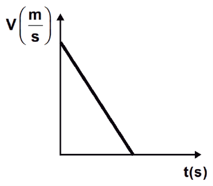
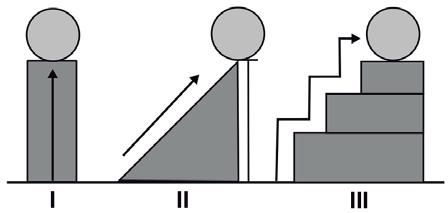
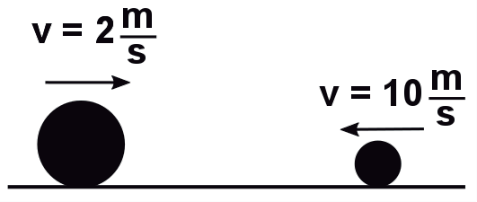
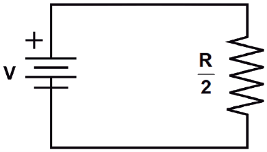
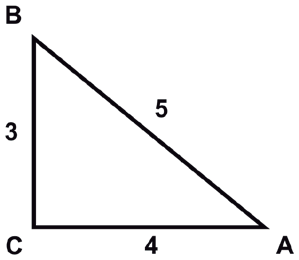
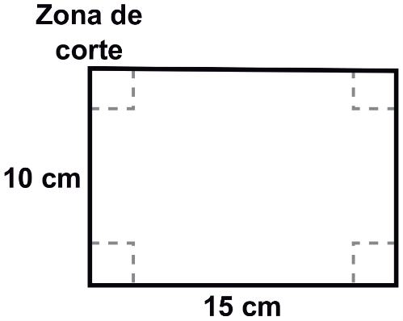

Simulación de Examen — Ingreso a la Licenciatura UNAM Área 2 (Guía 2023)
La respuesta correcta aparece en verde
Pregunta 1 (ID 1)
¿Qué representa la siguiente gráfica?

A. La caída libre de un cuerpo desde el reposo.
B. Un lanzamiento vertical hacia abajo.
C. Un movimiento con aceleración positiva.
D. Un movimiento con aceleración negativa. ✓
Pregunta 2 (ID 2)
Tres caballos jalan una carreta de 500 kg en la misma dirección. Cada uno de los caballos ejerce una fuerza de 1 500 N sobre la carreta. Si no hay fricción entre la carreta y el suelo, la fuerza total con la que ésta es jalada es de
A. 3 N
B. 300 N
C. 1 500 N
D. 4 500 N ✓
Pregunta 3 (ID 3)
Una báscula tiene un resorte cuya constante de elasticidad es de 1 000 N/m. Si colocas en ésta una masa de 10 kg, ¿cuánto se estirará su resorte?
Considera g = 10 m/s²
A. 0.10 m ✓
B. 1.0 m
C. 0.01 m
D. 10.0 m
Pregunta 4 (ID 4)
Una bola de billar se sube a 3 m de altura en diferentes casos, como muestran las figuras. Indica cuál de las afirmaciones que se presentan es correcta.

A. En el caso I se efectúa mayor trabajo.
B. En el caso II se efectúa menor trabajo.
C. En el caso I y III se efectúa menos trabajo que en el II.
D. En los tres casos se efectúa igual trabajo. ✓
Pregunta 5 (ID 5)
Una pelota de 2 kg se desplaza hacia la izquierda con una velocidad de 10 m/s, y choca de frente con una pelota de 4 kg que viaja hacia la derecha a 2 m/s. Calcula la velocidad final si las dos pelotas se quedan pegadas después del choque.

A. 5 m/s
B. −8 m/s
C. 12 m/s
D. −2 m/s ✓
Pregunta 6 (ID 6)
¿Cuál es la densidad del oxígeno diatómico que está a una temperatura de 27°C y a una atmósfera de presión?
Considera:
La masa molecular del oxígeno monoatómico es 16 uma.
El valor de la constante universal del gas ideal es de 8.314 J/(mol·k)
A. 0.08 kg/m³
B. 14.4 kg/m³
C. 0.6 kg/m³
D. 1.3 kg/m³ ✓
Pregunta 7 (ID 7)
A la playa llega el oleaje del mar y en ocasiones llegan algunas olas de mayor tamaño que el promedio. Lo anterior se debe al comportamiento ondulatorio de las olas, pues una característica de éstas es que se
A. refractan.
B. polarizan.
C. reflejan.
D. superponen. ✓
Pregunta 8 (ID 8)
De acuerdo con la imagen, la corriente que circula por el resistor de resistencia R/2 es

A. V/(2R)
B. 2V/R ✓
C. V/(3R)
D. 3V/R
Pregunta 9 (ID 9)
El orden creciente de la longitud de onda para el color azul (z), el verde (v), el rojo (r), y la luz amarilla (a) es
A. r, a, v, z.
B. a, v, r, z.
C. v, a, z, r.
D. z, v, a, r. ✓
Pregunta 10 (ID 10)
La presión atmosférica en el Everest disminuye comparada con la del nivel del mar porque
A. la densidad del aire cambia.
B. la altura de la capa de aire soportada es menor. ✓
C. la presión hidrostática del mar influye.
D. la densidad del aire soportada es mayor.
Pregunta 11 (ID 11)
¿Qué tipo de imagen forma un espejo convexo?
A. Real, derecha y menor que el objeto. ✓
B. Virtual, invertida y mayor que el objeto.
C. Real, invertida y menor que el objeto.
D. Virtual, derecha y mayor que el objeto.
Pregunta 12 (ID 12)
¿Cuál de las siguientes opciones es un postulado del modelo atómico de Bohr?
A. Los electrones en órbita circular cuando están acelerados pierden energía y caen al núcleo.
B. Los electrones se mueven en estados estacionarios alrededor del núcleo sin perder energía. ✓
C. De acuerdo con la radiación beta debe haber electrones en el núcleo atómico.
D. Un electrón en el átomo puede variar continuamente el valor de su energía.
Pregunta 13 (ID 13)
La cabalidad es una propiedad del texto, consiste en que éste sea completo y tenga
A. unidad de sentido. ✓
B. datos comprobables.
C. elementos de análisis.
D. opinión del autor.
Pregunta 14 (ID 14)
Identifica el propósito del siguiente texto.
En la ceremonia celebrada en la explanada Francisco I. Madero de la residencia oficial de Los Pinos, Calderón indicó que para los XVI Juegos Panamericanos, Guadalajara 2011, se espera que participen ocho mil quinientos atletas de cuarenta y dos países y más de doscientos cincuenta mil visitantes nacionales y extranjeros.
A. Reflexionar sobre un tema.
B. Plasmar un sentimiento.
C. Difundir ideas políticas.
D. Informar oportunamente. ✓
Pregunta 15 (ID 15)
El texto poético tiene como característica que
A. describe una noticia sentimental e impactante.
B. plasma un sentimiento o pensamiento a través del uso de figuras retóricas. ✓
C. relata hechos en forma objetiva y con un mensaje sensible.
D. persuade al lector de tomar una actitud positiva.
Pregunta 16 (ID 16)
¿A qué género corresponde el siguiente fragmento?
Arturo, el noble rey de Bretaña, cuyas proezas son para nosotros ejemplo de valor y cortesía, al llegar la fiesta que llamamos Pentecostés, la celebró con todo el fasto propio de la realeza, reuniendo a su corte en Caraduel, en el país de Gales.
A. Épico. ✓
B. Lírico.
C. Tragedia.
D. Comedia.
Pregunta 17 (ID 17)
Corriente literaria que surge en la segunda mitad del siglo XIX, en la cual predomina la objetividad del narrador y la descripción.
A. Romanticismo.
B. Clasicismo.
C. Realismo. ✓
D. Expresionismo.
Pregunta 18 (ID 18)
Los relatos cortos Diles que no me maten y No oyes ladrar los perros fueron escritos por
A. Juan Rulfo. ✓
B. Carlos Fuentes.
C. Octavio Paz.
D. José Agustín.
Pregunta 19 (ID 19)
Un cuento se diferencia de una novela porque éste tiene
A. personajes complejos y diversos clímax.
B. desarrollo elaborado y pocos personajes.
C. brevedad y rápido desenlace. ✓
D. intensidad y múltiples hilos narrativos.
Pregunta 20 (ID 20)
La novela pertenece al género ________, está escrita en ________ y suele tener una estructura ________.
A. narrativo — prosa — compleja ✓
B. épico — verso — complicada
C. dramático — verso — escueta
D. lírico — prosa — simple
Pregunta 21 (ID 21)
El siguiente ejemplo se refiere a una ficha
Fuentes, C. (1958). La región más transparente. México: Fondo de Cultura Económica.
A. bibliográfica. ✓
B. cibergráfica.
C. hemerográfica.
D. catalográfica.
Pregunta 22 (ID 22)
¿De qué tipo es la siguiente ficha?
"lo que una persona cree de sí misma puede ser y, de hecho, generalmente, es muy distinto o incluso puede estar en total contradicción con lo que realmente es".
Fromm, Erich. Grandezas y limitaciones del pensamiento de Freud. México, Siglo XXI, 1991, p.37.
A. Hemerográfica.
B. De síntesis.
C. Bibliográfica.
D. De cita textual. ✓
Pregunta 23 (ID 23)
La especie $$^{78}_{34}Se^{2-}$$ contiene ___ protones, ___ neutrones y ___ electrones.
A. 44, 34, 44
B. 34, 44, 36 ✓
C. 78, 34, 80
D. 78, 44, 36
Pregunta 24 (ID 24)
¿Cuántos gramos equivalen a 0.5 mol de ácido fosfórico, H₃PO₄?
A. 49 g ✓
B. 24 g
C. 98 g
D. 48 g
Pregunta 25 (ID 25)
El agua es un disolvente polar debido a
A. su elevado punto de ebullición.
B. la alta capacidad calorífica que presenta.
C. su elevada constante dieléctrica.
D. la estructura angular de sus moléculas. ✓
Pregunta 26 (ID 26)
Sustancias que al estar en disolución donan protones.
A. Óxidos.
B. Ácidos. ✓
C. Bases.
D. Sales.
Pregunta 27 (ID 27)
¿Cuál es la molaridad de una disolución que contiene 20 g de NaOH en 2 L de solución?
A. 0.25 M ✓
B. 0.50 M
C. 0.75 M
D. 1.00 M
Pregunta 28 (ID 28)
Los dos principales componentes del aire son
A. oxígeno y dióxido de carbono.
B. nitrógeno y oxígeno. ✓
C. ozono y dióxido de carbono.
D. nitrógeno y ozono.
Pregunta 29 (ID 29)
¿Cuál de las siguientes reacciones químicas favorece la formación de la lluvia ácida?
A. NaOH → Na⁺ + OH⁻
B. SO₃ + H₂O → H₂SO₄ ✓
C. O₃ + NO → NO₂ + O₂
D. N₂ + 3H₂ → 2NH₃
Pregunta 30 (ID 30)
Los triglicéridos son un grupo de lípidos caracterizados por tener el grupo funcional
A. éter.
B. éster. ✓
C. amida.
D. alcohol.
Pregunta 31 (ID 31)
Son los dos grupos funcionales presentes en todos los aminoácidos.
A. –COO– y –CONH₂
B. –CHO y –CONH₂
C. –CO– y –NH₂
D. –COOH y –NH₂ ✓
Pregunta 32 (ID 32)
Calcula el valor de entalpía de la siguiente reacción.
$$2ZnS_{(s)} + 3O_{2(g)} \to 2ZnO_{(s)} + 2SO_{2(g)}$$
Considera:
$$\Delta H°_{ZnS} = -202.9 \text{ kJ}$$
$$\Delta H°_{ZnO} = -348 \text{ kJ}$$
$$\Delta H°_{SO_2} = -296.4 \text{ kJ}$$
$$\Delta H°_{O_2} = 0 \text{ kJ}$$
A. –883 kJ ✓
B. 883 kJ
C. 1230 kJ
D. –1230 kJ
Pregunta 33 (ID 33)
A presión estándar el carbono grafito es más estable que el carbono diamante. Para la transición $$C_{grafito} \to C_{diamante}$$ se cumple que
A. $$\Delta G° < 0$$
B. $$\Delta G° > 0$$ ✓
C. $$\Delta G° \leq 0$$
D. $$\Delta G° = 0$$
Pregunta 34 (ID 34)
De acuerdo con su posición en la tabla periódica, ¿cuántos electrones tiene el átomo de carbono en su segundo nivel de energía?
A. Dos.
B. Cuatro. ✓
C. Ocho.
D. Seis.
Pregunta 35 (ID 35)
¿Cuál de los siguientes compuestos es un ácido carboxílico?
A. $$CH_3\text{–}C(=O)\text{–}OH$$ ✓
B. $$CH_3\text{–}C(=O)\text{–}NH_2$$
C. $$CH_3\text{–}CH_2\text{–}CH_3$$
D. $$CH_3\text{–}C(=O)\text{–}OCH_2CH_3$$
Pregunta 36 (ID 36)
En la actualidad, la principal finalidad de la Geografía es
A. diferenciar las causas y efectos de los hechos y fenómenos geográficos.
B. conocer los efectos terrestres provocados por los fenómenos naturales.
C. explicar la relación entre los elementos naturales y sociales del medio geográfico. ✓
D. localizar los elementos naturales y sociales sobre la superficie terrestre.
Pregunta 37 (ID 37)
Coordenada geográfica que permite ubicar un lugar al norte y sur del Ecuador.
A. Latitud. ✓
B. Altitud.
C. Longitud.
D. Nutación.
Pregunta 38 (ID 38)
La geografía física estudia
A. el relieve y las actividades económicas.
B. la sociedad y los tipos de vegetación.
C. el clima y las regiones naturales. ✓
D. la población y los tipos de clima.
Pregunta 39 (ID 39)
Movimiento de agua oceánica que regula la temperatura del planeta y favorece la actividad pesquera.
A. Olas de oscilación.
B. Corrientes frías. ✓
C. Olas de traslación.
D. Mareas vivas.
Pregunta 40 (ID 40)
La taiga o bosque de coníferas se localiza en el
A. norte de Europa y norte de Asia. ✓
B. sur de Europa y sur de Asia.
C. norte de África y norte de Asia.
D. sur de América y norte de Oceanía.
Pregunta 41 (ID 41)
El uso excesivo de plaguicidas produce la contaminación de
A. la troposfera.
B. las aguas superficiales. ✓
C. la atmósfera.
D. los lagos tectónicos.
Pregunta 42 (ID 42)
Se caracteriza por ser la región más poblada de México y la más atrayente para la migración rural — urbana.
A. Pacífico Sur.
B. Noroeste.
C. Centro Sur. ✓
D. Sureste.
Pregunta 43 (ID 43)
Características que distinguen a un país en desarrollo.
A. Desarrollo económico dependiente, exportación de materias primas e importación de productos manufacturados. ✓
B. Importación de materias primas agropecuarias, desarrollo económico independiente y exportación de productos tropicales.
C. Desarrollo económico dependiente, importación de materias primas agropecuarias y exportación de productos manufacturados.
D. Importación de materias primas agropecuarias, exportación de productos tropicales e importación de productos manufacturados.
Pregunta 44 (ID 44)
Una de las causas principales de la desintegración de los estados—nación es
A. la pugna por la explotación de los recursos naturales.
B. la aplicación de políticas neoliberales.
C. el cambio de sistema económico.
D. el descontento social de las minorías étnicas y religiosas. ✓
Pregunta 45 (ID 45)
El corredor del Bajío es la principal área industrial ________ en México.
A. automotriz ✓
B. petroquímica
C. maquiladora
D. metalúrgica
Pregunta 46 (ID 46)
Si 127 es el dividendo y 11 es el divisor en la ecuación, ¿cuánto valen el cociente c y el residuo r?
$$127 = c \cdot 11 + r$$
A. c = 11 y r = 0
B. c = 12 y r = –5
C. c = 10 y r = 17
D. c = 11 y r = 6 ✓
Pregunta 47 (ID 47)
Factoriza la siguiente expresión.
$$n^6 - 3n^3 - 18$$
A. $$(n^3 + 3)(n^3 - 6)$$ ✓
B. $$(n^3 - 3)(n^3 + 6)$$
C. $$(n^3 - 3)(n^3 - 6)$$
D. $$(n^3 + 3)(n^3 + 6)$$
Pregunta 48 (ID 48)
Selecciona la expresión que corresponde a una ecuación
A. $$\sin(x) = \frac{1}{2}$$ ✓
B. $$\sin(x) = \frac{1}{2}x$$
C. $$\sin^2(x) + \cos^2(x) = 1$$
D. $$\sec^2(x) - \tan^2(x) = 1$$
Pregunta 49 (ID 49)
Las soluciones de la ecuación $$4x^2 + 16x + 15 = 0$$ son
A. $$x_1 = -\frac{3}{2}, \quad x_2 = -\frac{5}{2}$$ ✓
B. $$x_1 = 3, \quad x_2 = -\frac{5}{4}$$
C. $$x_1 = \frac{3}{2}, \quad x_2 = \frac{5}{2}$$
D. $$x_1 = -\frac{3}{4}, \quad x_2 = 5$$
Pregunta 50 (ID 50)
Selecciona la desigualdad que tiene por solución al siguiente conjunto.
$$\left(-\infty, \frac{2}{6}\right]$$
A. $$3x - 1 \geq 0$$
B. $$2x - 6 \geq 0$$
C. $$-3x + 1 \geq 0$$ ✓
D. $$-2x + 6 \geq 0$$
Pregunta 51 (ID 51)
A partir del siguiente sistema de ecuaciones obtén el valor de x.
$$5x - 4y = 19$$
$$7x + 3y = 18$$
A. $$x = -3$$
B. $$x = -1$$
C. $$x = 1$$
D. $$x = 3$$ ✓
Pregunta 52 (ID 52)
Determina el rango de la función $$f(x) = 5 - 3(x - 2)^2$$
A. $$y \in \mathbb{R}, \; y \geq 5$$
B. $$x \in \mathbb{R}, \; y \in \mathbb{R}$$
C. $$x \in \mathbb{R}, \; x \geq 5$$
D. $$y \in \mathbb{R}, \; y \leq 5$$ ✓
Pregunta 53 (ID 53)
¿Cuál es el seno del ángulo A en el triángulo rectángulo siguiente?

A. $$\frac{3}{5}$$ ✓
B. $$\frac{4}{5}$$
C. $$\frac{5}{3}$$
D. $$\frac{5}{4}$$
Pregunta 54 (ID 54)
Selecciona la función que tiene un desplazamiento de fase de $$\pi$$ unidades a la derecha.
A. $$f(x) = \sin(\pi x)$$
B. $$f(x) = \sin(x + \pi)$$
C. $$f(x) = \sin(x - \pi)$$ ✓
D. $$f(x) = \pi \cdot \sin(x)$$
Pregunta 55 (ID 55)
¿Cuál es el dominio de la siguiente función?
$$f(x) = \log(x - 1)$$
A. $$x \leq 1$$
B. $$x < 1$$
C. $$x > 1$$ ✓
D. $$x \geq 1$$
Pregunta 56 (ID 56)
El punto medio del segmento que une a los puntos $$A(2m, m + 1)$$ y $$B(2m, m - 1)$$ es
A. $$(0, 2)$$
B. $$(m, 2m)$$
C. $$(2m, m)$$ ✓
D. $$(4m, 2m)$$
Pregunta 57 (ID 57)
La pendiente de la recta $$3x + 6y - 1 = 0$$ es
A. $$-3$$
B. $$-\frac{1}{2}$$ ✓
C. $$\frac{1}{2}$$
D. $$3$$
Pregunta 58 (ID 58)
La distancia del punto $$(-1, 1)$$ a la recta dada por la ecuación $$-3x + 4y - 8 = 0$$ es
A. 0.2 unidades. ✓
B. 2 unidades.
C. 1.25 unidades.
D. 8 unidades.
Pregunta 59 (ID 59)
Indica las coordenadas del centro de la circunferencia cuya ecuación general es $$3x^2 + 3y^2 + 12x + 30y + 6 = 0$$
A. $$C(-4, -10)$$
B. $$C(-2, -5)$$ ✓
C. $$C(4, 10)$$
D. $$C(2, 5)$$
Pregunta 60 (ID 60)
La ecuación de la parábola cuyo eje focal es el eje y, con el parámetro $$p = -5$$ y vértice en el origen es
A. $$x^2 - 20x = 0$$
B. $$y^2 - 20x = 0$$
C. $$y^2 + 20x = 0$$
D. $$x^2 + 20y = 0$$ ✓
Pregunta 61 (ID 61)
Lugar geométrico en el plano en el que la suma de las distancias de cualquiera de los puntos a dos puntos fijos llamados focos es una cantidad constante.
A. Elipse. ✓
B. Circunferencia.
C. Hipérbola.
D. Parábola.
Pregunta 62 (ID 62)
La ecuación de la hipérbola centrada en el origen, con lado recto 10 y vértice $$V(0, -9)$$ es
A. $$9x^2 - 5y^2 = 405$$
B. $$5y^2 - 9x^2 = 405$$ ✓
C. $$9x^2 - 10y^2 = 90$$
D. $$10x^2 - 9y^2 = 90$$
Pregunta 63 (ID 63)
Selecciona el criterio utilizado para definir que la ecuación de segundo grado $$Ax^2 + Bxy + Cy^2 + Dx + Ey + F = 0$$ represente una elipse.
A. $$C^2 - 4AB < 0$$
B. $$B^2 - 4AC > 0$$
C. $$C^2 - 4AB > 0$$
D. $$B^2 - 4AC < 0$$ ✓
Pregunta 64 (ID 64)
Calcula el límite $$\lim_{x \to 0} \frac{\sqrt{2+x} - \sqrt{2}}{x}$$
A. $$\frac{\sqrt{2}}{2}$$
B. $$\frac{1}{\sqrt{2}}$$
C. $$\frac{1}{2}$$
D. $$\frac{\sqrt{2}}{4}$$ ✓
Pregunta 65 (ID 65)
La derivada de la expresión $$y = 2x^{1/2} + 6x^{1/3}$$ es
A. $$y' = 2x^{1/2} + 6x^{1/3}$$
B. $$y' = x^{-1/2} + 2x^{-2/3}$$
C. $$y' = -\frac{1}{x^{1/2}} - \frac{2}{x^{2/3}}$$
D. $$y' = \frac{1}{x^{1/2}} + \frac{2}{x^{2/3}}$$ ✓
Pregunta 66 (ID 66)
La derivada de $$f(x) = \ln\sqrt{x^2+1}$$ con respecto a x es
A. $$f'(x) = \frac{x}{2\sqrt{x^2+1}}$$
B. $$f'(x) = \frac{x}{2(x^2+1)}$$
C. $$f'(x) = \frac{x}{x\sqrt{x^2+1}}$$
D. $$f'(x) = \frac{x}{x^2+1}$$ ✓
Pregunta 67 (ID 67)
Se desea fabricar una caja sin tapa con una lámina de aluminio de 10 cm x 15 cm. ¿Cuánto se deberá cortar en cada esquina de la lámina para obtener el volumen máximo?

A. $$\frac{25 + 5\sqrt{7}}{3}$$
B. $$\frac{25 + 5\sqrt{43}}{3}$$
C. $$\frac{25 - 5\sqrt{43}}{3}$$
D. $$\frac{25 - 5\sqrt{7}}{3}$$ ✓
Pregunta 68 (ID 68)
La $$\int \sqrt{x} \, dx$$ es igual a
A. $$\frac{1}{2\sqrt{x}} + c$$
B. $$\frac{3}{2}\sqrt{x} + c$$
C. $$\frac{2}{3}\sqrt{x} + c$$
D. $$\frac{2}{3}x\sqrt{x} + c$$ ✓
Pregunta 69 (ID 69)
La $$\int (2x - 1)^3 \, dx$$ es igual a
A. $$\frac{(2x-1)^2}{6} + c$$
B. $$\frac{(2x-1)^4}{4} + c$$
C. $$\frac{(2x-1)^2}{2} + c$$
D. $$\frac{(2x-1)^4}{8} + c$$ ✓
Pregunta 70 (ID 70)
Elige la función de la lengua que predomina en el siguiente enunciado.
La Edad Media es el periodo comprendido entre el 476 d.C. y el 1453 d.C., año en que Constantinopla se rindió ante los turcos.
A. Metalingüística.
B. Apelativa.
C. Referencial. ✓
D. Expresiva.
Pregunta 71 (ID 71)
En el siguiente enunciado se ejemplifica la función ________ de la lengua.
Contra el silencio y el bullicio invento la palabra, libertad que se inventa y me inventa cada día.
A. referencial
B. emotiva
C. fática
D. poética ✓
Pregunta 72 (ID 72)
¿Qué forma del discurso se utiliza en el siguiente párrafo?
Las patas de los artrópodos están articuladas y su cuerpo está dividido en segmentos agrupados en tres regiones principales: cabeza, tórax y abdomen. En cambio los ácaros tienen cuatro pares de patas locomotoras. El primer par lo llevan levantado hacia adelante, a manera de antenas, para detectar los estímulos que les permiten orientarse.
A. Expositiva.
B. Descriptiva. ✓
C. Narrativa.
D. Argumentativa.
Pregunta 73 (ID 73)
¿Qué forma del discurso predomina en el siguiente párrafo?
Si bien la educación básica no alcanza una cobertura universal en los estratos de menores ingresos, debe ponerse énfasis en los aspectos de calidad y equidad, otorgando mayores oportunidades educativas a los niños, niñas y adolescentes de los estratos bajos y medios. Ello implica dar continuidad al proceso educativo, mejorar la eficiencia interna del sistema —reduciendo el ingreso tardío y la reprobación—, y llevar a cabo políticas tendientes a aumentar la educación secundaria.
A. Narrativa.
B. Expositiva.
C. Argumentativa. ✓
D. Descriptiva.
Pregunta 74 (ID 74)
Lee el siguiente texto y contesta.
El misterio de las joyas de concha
Al igual que la turquesa, las plumas de aves exóticas y el oro, la concha (lo que conocemos como concha de mar) era un material precioso en el México prehispánico (anterior a la conquista y colonización españolas). Así lo prueban los cientos de piezas elaboradas con diversos tipos de conchas recuperadas en las distintas excavaciones a lo largo de todo el país: solo en las excavaciones que se realizan desde 1978 en la zona arqueológica del Templo Mayor de Tenochtitlan se han recuperado más de 2,300 objetos hechos con concha. Las piezas, que han ido apareciendo en diferentes excavaciones, eran depositadas en las tumbas como ofrendas funerarias para recrear el inframundo acuático.
Para los mexicas, así como las diversas culturas de Mesoamérica, la concha tenía una connotación sagrada, pues al ser un elemento acuático se asociaba con ese líquido esencial en el desarrollo de la vida. Además, por lo difícil que resultaba su obtención, era considerada un material de lujo, al que, por ejemplo, en Tenochtitlan, solo tenía acceso la clase gobernante.
El arqueólogo Adrián Velázquez Castro busca desde hace quince años las huellas de las herramientas empleadas por los artesanos prehispánicos en la elaboración de los objetos de concha. Y es que, a pesar de la gran cantidad de piezas recuperadas, no se han encontrado hasta ahora en la zona del Templo Mayor de Tenochtitlan restos de ningún taller o del área de producción de estos adornos. Velázquez empezó a trabajar en la clasificación de la colección de objetos de concha del Templo Mayor, pero su interés por conocer las formas de elaboración de estas piezas lo llevó a crear un proyecto de arqueología experimental que se convertiría, con el tiempo, en un taller de fabricación de la concha. Con este taller se pretende conocer, mediante la reconstrucción de las piezas antiguas con conchas modernas, las técnicas con las que se trabajó este material en la época prehispánica. Gracias al taller se ha podido saber, por ejemplo, que la producción del Templo Mayor fue muy estandarizada (se utilizaron la misma técnica y los mismos materiales), fue controlada por la clase gobernante y estuvo enfocada, casi exclusivamente, a la creación de objetos ornamentales.
Al principio el taller se limitó a estudiar la colección de objetos de concha del Templo Mayor, pero poco a poco se extendió, y ya lleva realizados más de setecientos experimentos con otros objetos de concha del México prehispánico. «En gran parte gracias al trabajo de estudiantes de arqueología, tenemos ya un buen número de colecciones estudiadas, que van desde el norte de México hasta la zona maya, desde las etapas más tempranas, durante el periodo formativo, hasta el posclásico tardío, con la conquista española», comenta Adrián Velázquez Castro.
El Universal
---
La idea principal del texto es que
A. la concha fue un material precioso y lujoso para las culturas prehispánicas. ✓
B. el taller ha trabajado con distintas muestras de conchas prehispánicas.
C. la arqueología estudia las manifestaciones culturales antiguas.
D. el trabajo de los estudiantes ha contribuido a obtener información veraz.
Pregunta 75 (ID 75)
Lee el siguiente texto y contesta.
El misterio de las joyas de concha
Al igual que la turquesa, las plumas de aves exóticas y el oro, la concha (lo que conocemos como concha de mar) era un material precioso en el México prehispánico (anterior a la conquista y colonización españolas). Así lo prueban los cientos de piezas elaboradas con diversos tipos de conchas recuperadas en las distintas excavaciones a lo largo de todo el país: solo en las excavaciones que se realizan desde 1978 en la zona arqueológica del Templo Mayor de Tenochtitlan se han recuperado más de 2,300 objetos hechos con concha. Las piezas, que han ido apareciendo en diferentes excavaciones, eran depositadas en las tumbas como ofrendas funerarias para recrear el inframundo acuático.
Para los mexicas, así como las diversas culturas de Mesoamérica, la concha tenía una connotación sagrada, pues al ser un elemento acuático se asociaba con ese líquido esencial en el desarrollo de la vida. Además, por lo difícil que resultaba su obtención, era considerada un material de lujo, al que, por ejemplo, en Tenochtitlan, solo tenía acceso la clase gobernante.
El arqueólogo Adrián Velázquez Castro busca desde hace quince años las huellas de las herramientas empleadas por los artesanos prehispánicos en la elaboración de los objetos de concha. Y es que, a pesar de la gran cantidad de piezas recuperadas, no se han encontrado hasta ahora en la zona del Templo Mayor de Tenochtitlan restos de ningún taller o del área de producción de estos adornos. Velázquez empezó a trabajar en la clasificación de la colección de objetos de concha del Templo Mayor, pero su interés por conocer las formas de elaboración de estas piezas lo llevó a crear un proyecto de arqueología experimental que se convertiría, con el tiempo, en un taller de fabricación de la concha. Con este taller se pretende conocer, mediante la reconstrucción de las piezas antiguas con conchas modernas, las técnicas con las que se trabajó este material en la época prehispánica. Gracias al taller se ha podido saber, por ejemplo, que la producción del Templo Mayor fue muy estandarizada (se utilizaron la misma técnica y los mismos materiales), fue controlada por la clase gobernante y estuvo enfocada, casi exclusivamente, a la creación de objetos ornamentales.
Al principio el taller se limitó a estudiar la colección de objetos de concha del Templo Mayor, pero poco a poco se extendió, y ya lleva realizados más de setecientos experimentos con otros objetos de concha del México prehispánico. «En gran parte gracias al trabajo de estudiantes de arqueología, tenemos ya un buen número de colecciones estudiadas, que van desde el norte de México hasta la zona maya, desde las etapas más tempranas, durante el periodo formativo, hasta el posclásico tardío, con la conquista española», comenta Adrián Velázquez Castro.
El Universal
---
La frase inframundo acuático se refiere a que ________ en el mundo de los muertos.
A. el elemento fuego no es predominante
B. el ser es sagrado
C. existe el agua como expresión de vida ✓
D. hay ríos y lagos
Pregunta 76 (ID 76)
Lee el siguiente texto y contesta.
El misterio de las joyas de concha
Al igual que la turquesa, las plumas de aves exóticas y el oro, la concha (lo que conocemos como concha de mar) era un material precioso en el México prehispánico (anterior a la conquista y colonización españolas). Así lo prueban los cientos de piezas elaboradas con diversos tipos de conchas recuperadas en las distintas excavaciones a lo largo de todo el país: solo en las excavaciones que se realizan desde 1978 en la zona arqueológica del Templo Mayor de Tenochtitlan se han recuperado más de 2,300 objetos hechos con concha. Las piezas, que han ido apareciendo en diferentes excavaciones, eran depositadas en las tumbas como ofrendas funerarias para recrear el inframundo acuático.
Para los mexicas, así como las diversas culturas de Mesoamérica, la concha tenía una connotación sagrada, pues al ser un elemento acuático se asociaba con ese líquido esencial en el desarrollo de la vida. Además, por lo difícil que resultaba su obtención, era considerada un material de lujo, al que, por ejemplo, en Tenochtitlan, solo tenía acceso la clase gobernante.
El arqueólogo Adrián Velázquez Castro busca desde hace quince años las huellas de las herramientas empleadas por los artesanos prehispánicos en la elaboración de los objetos de concha. Y es que, a pesar de la gran cantidad de piezas recuperadas, no se han encontrado hasta ahora en la zona del Templo Mayor de Tenochtitlan restos de ningún taller o del área de producción de estos adornos. Velázquez empezó a trabajar en la clasificación de la colección de objetos de concha del Templo Mayor, pero su interés por conocer las formas de elaboración de estas piezas lo llevó a crear un proyecto de arqueología experimental que se convertiría, con el tiempo, en un taller de fabricación de la concha. Con este taller se pretende conocer, mediante la reconstrucción de las piezas antiguas con conchas modernas, las técnicas con las que se trabajó este material en la época prehispánica. Gracias al taller se ha podido saber, por ejemplo, que la producción del Templo Mayor fue muy estandarizada (se utilizaron la misma técnica y los mismos materiales), fue controlada por la clase gobernante y estuvo enfocada, casi exclusivamente, a la creación de objetos ornamentales.
Al principio el taller se limitó a estudiar la colección de objetos de concha del Templo Mayor, pero poco a poco se extendió, y ya lleva realizados más de setecientos experimentos con otros objetos de concha del México prehispánico. «En gran parte gracias al trabajo de estudiantes de arqueología, tenemos ya un buen número de colecciones estudiadas, que van desde el norte de México hasta la zona maya, desde las etapas más tempranas, durante el periodo formativo, hasta el posclásico tardío, con la conquista española», comenta Adrián Velázquez Castro.
El Universal
---
A partir del texto se infiere que la concha de mar tiene las siguientes características.
A. Moldeables y duraderas. ✓
B. Maleables y efímeras.
C. Lujosas y endebles.
D. Exóticas e inefables.
Pregunta 77 (ID 77)
Lee el siguiente texto y contesta.
El misterio de las joyas de concha
Al igual que la turquesa, las plumas de aves exóticas y el oro, la concha (lo que conocemos como concha de mar) era un material precioso en el México prehispánico (anterior a la conquista y colonización españolas). Así lo prueban los cientos de piezas elaboradas con diversos tipos de conchas recuperadas en las distintas excavaciones a lo largo de todo el país: solo en las excavaciones que se realizan desde 1978 en la zona arqueológica del Templo Mayor de Tenochtitlan se han recuperado más de 2,300 objetos hechos con concha. Las piezas, que han ido apareciendo en diferentes excavaciones, eran depositadas en las tumbas como ofrendas funerarias para recrear el inframundo acuático.
Para los mexicas, así como las diversas culturas de Mesoamérica, la concha tenía una connotación sagrada, pues al ser un elemento acuático se asociaba con ese líquido esencial en el desarrollo de la vida. Además, por lo difícil que resultaba su obtención, era considerada un material de lujo, al que, por ejemplo, en Tenochtitlan, solo tenía acceso la clase gobernante.
El arqueólogo Adrián Velázquez Castro busca desde hace quince años las huellas de las herramientas empleadas por los artesanos prehispánicos en la elaboración de los objetos de concha. Y es que, a pesar de la gran cantidad de piezas recuperadas, no se han encontrado hasta ahora en la zona del Templo Mayor de Tenochtitlan restos de ningún taller o del área de producción de estos adornos. Velázquez empezó a trabajar en la clasificación de la colección de objetos de concha del Templo Mayor, pero su interés por conocer las formas de elaboración de estas piezas lo llevó a crear un proyecto de arqueología experimental que se convertiría, con el tiempo, en un taller de fabricación de la concha. Con este taller se pretende conocer, mediante la reconstrucción de las piezas antiguas con conchas modernas, las técnicas con las que se trabajó este material en la época prehispánica. Gracias al taller se ha podido saber, por ejemplo, que la producción del Templo Mayor fue muy estandarizada (se utilizaron la misma técnica y los mismos materiales), fue controlada por la clase gobernante y estuvo enfocada, casi exclusivamente, a la creación de objetos ornamentales.
Al principio el taller se limitó a estudiar la colección de objetos de concha del Templo Mayor, pero poco a poco se extendió, y ya lleva realizados más de setecientos experimentos con otros objetos de concha del México prehispánico. «En gran parte gracias al trabajo de estudiantes de arqueología, tenemos ya un buen número de colecciones estudiadas, que van desde el norte de México hasta la zona maya, desde las etapas más tempranas, durante el periodo formativo, hasta el posclásico tardío, con la conquista española», comenta Adrián Velázquez Castro.
El Universal
---
¿Cuál es el interés del arqueólogo Adrián Velázquez Castro al crear el taller de fabricación de la concha?
A. Dar a conocer los oficios prehispánicos.
B. Continuar con la tradición mexica.
C. Imitar el trabajo manual indígena.
D. Rescatar la manufactura precolombina. ✓
Pregunta 78 (ID 78)
Lee el siguiente texto y contesta.
El misterio de las joyas de concha
Al igual que la turquesa, las plumas de aves exóticas y el oro, la concha (lo que conocemos como concha de mar) era un material precioso en el México prehispánico (anterior a la conquista y colonización españolas). Así lo prueban los cientos de piezas elaboradas con diversos tipos de conchas recuperadas en las distintas excavaciones a lo largo de todo el país: solo en las excavaciones que se realizan desde 1978 en la zona arqueológica del Templo Mayor de Tenochtitlan se han recuperado más de 2,300 objetos hechos con concha. Las piezas, que han ido apareciendo en diferentes excavaciones, eran depositadas en las tumbas como ofrendas funerarias para recrear el inframundo acuático.
Para los mexicas, así como las diversas culturas de Mesoamérica, la concha tenía una connotación sagrada, pues al ser un elemento acuático se asociaba con ese líquido esencial en el desarrollo de la vida. Además, por lo difícil que resultaba su obtención, era considerada un material de lujo, al que, por ejemplo, en Tenochtitlan, solo tenía acceso la clase gobernante.
El arqueólogo Adrián Velázquez Castro busca desde hace quince años las huellas de las herramientas empleadas por los artesanos prehispánicos en la elaboración de los objetos de concha. Y es que, a pesar de la gran cantidad de piezas recuperadas, no se han encontrado hasta ahora en la zona del Templo Mayor de Tenochtitlan restos de ningún taller o del área de producción de estos adornos. Velázquez empezó a trabajar en la clasificación de la colección de objetos de concha del Templo Mayor, pero su interés por conocer las formas de elaboración de estas piezas lo llevó a crear un proyecto de arqueología experimental que se convertiría, con el tiempo, en un taller de fabricación de la concha. Con este taller se pretende conocer, mediante la reconstrucción de las piezas antiguas con conchas modernas, las técnicas con las que se trabajó este material en la época prehispánica. Gracias al taller se ha podido saber, por ejemplo, que la producción del Templo Mayor fue muy estandarizada (se utilizaron la misma técnica y los mismos materiales), fue controlada por la clase gobernante y estuvo enfocada, casi exclusivamente, a la creación de objetos ornamentales.
Al principio el taller se limitó a estudiar la colección de objetos de concha del Templo Mayor, pero poco a poco se extendió, y ya lleva realizados más de setecientos experimentos con otros objetos de concha del México prehispánico. «En gran parte gracias al trabajo de estudiantes de arqueología, tenemos ya un buen número de colecciones estudiadas, que van desde el norte de México hasta la zona maya, desde las etapas más tempranas, durante el periodo formativo, hasta el posclásico tardío, con la conquista española», comenta Adrián Velázquez Castro.
El Universal
---
¿Cuál es la intención del autor al escribir este texto?
A. Comparar los materiales usados por las culturas prehispánicas.
B. Crear un taller para la fabricación de la concha de mar.
C. Divulgar los avances arqueológicos sobre las culturas prehispánicas. ✓
D. Revelar el misterio de las joyas de la concha de mar.
Pregunta 79 (ID 79)
Identifica el sujeto de la siguiente oración.
Los científicos hallaron los huesos de un dinosaurio y algunos restos de otras especies.
A. Los huesos.
B. Los científicos. ✓
C. Los restos.
D. El dinosaurio.
Pregunta 80 (ID 80)
Elige la opción que contiene predicado.
A. Compró la computadora. ✓
B. Las pirámides de Teotihuacán.
C. Hoy, mañana y siempre.
D. Las cuentas del gran capitán.
Pregunta 81 (ID 81)
¿Cuál de los siguientes enunciados está redactado correctamente?
A. Los papás de Ernesto no lo dejan que haga sólo las cosas.
B. Los papás de Ernesto no dejan hacer solo sus actividades.
C. Los papás de Ernesto no dejan que haga solo sus actividades. ✓
D. Los papás de Ernesto no lo dejan que haga las cosas sólo.
Pregunta 82 (ID 82)
¿Cuál de los siguientes párrafos está escrito correctamente?
A. Los personajes de la jarcha son principalmente la muchacha y el habib o amigo, como se denomina al amante. También aparece la madre y las hermanas como un rol de confidente mudo. Los temas son la ausencia del amado, la partida o llegada del amante al alba casi única referencia al exterior y la mención de alguna fiesta como la Pascua. ✓
B. Los personajes de la jarcha son principalmente, la muchacha y el habib, o amigo como se denomina al amante. También aparece la madre y las hermanas como un rol de confidente mudo. Los temas son la ausencia del amado la partida o llegada del amante al alba, casi única referencia al exterior, y la mención de alguna fiesta como la Pascua.
C. Los personajes de la jarcha son, principalmente la muchacha y el habib o amigo como se denomina al amante. También, aparece la madre y las hermanas como un rol de confidente mudo. Los temas son, la ausencia del amado, la partida o llegada del amante al alba casi única referencia al exterior y la mención de alguna fiesta como la Pascua.
D. Los personajes, de la jarcha son principalmente la muchacha y el habib o amigo, como se denomina al amante. También aparece la madre, y las hermanas como un rol de confidente mudo. Los temas son la ausencia del amado, la partida o llegada del amante, al alba casi única referencia al exterior y la mención de alguna fiesta como la Pascua.
Pregunta 83 (ID 83)
Selecciona el párrafo que presenta una redacción adecuada.
A. Amnistía Internacional hizo llegar hoy al nuevo gobernador del estado de Oaxaca una carta abierta en la cual presenta un resumen de los principales desafíos por afrontar en cuanto al cuidado de los derechos humanos, asimismo lo llama a desarrollar un plan de acción en la materia. ✓
B. Amnistía Internacional hizo llegar hoy al nuevo gobernador del estado de Oaxaca una carta abierta en la cual presenta un resumen de los principales desafíos por afrontar en cuanto al cuidado de los derechos humanos, así mismo lo llama a desarrollar un plan de acción en la materia.
C. Amnistía Internacional hizo llegar hoy al nuevo gobernador del estado de Oaxaca una carta abierta en la cual presenta un resumen de los principales desafíos por afrontar en cuanto al cuidado de los derechos humanos; asimismo lo llama a desarrollar un plan de acción en la materia.
D. Amnistía Internacional hizo llegar hoy al nuevo gobernador del estado de Oaxaca una carta abierta en la cual presenta un resumen de los principales desafíos por afrontar, en cuanto al cuidado de los derechos humanos, asimismo lo llama a desarrollar un plan de acción en la materia.
Pregunta 84 (ID 84)
Cardumen es a pez como
A. piara a enjambre.
B. gente a persona. ✓
C. rebaño a abeja.
D. parvada a horda.
Pregunta 85 (ID 85)
Selecciona el sinónimo de la palabra en mayúsculas.
Tuvo un leve ESTREMECIMIENTO de frío.
A. Ataque.
B. Espanto.
C. Sacudimiento.
D. Temblor. ✓
Pregunta 86 (ID 86)
Elige la opción con la ortografía correcta.
A. El rebaño avanza sin cesar y ellos comienzan a rezagarse. ✓
B. El rebaño avanza sin cesar y ellos comiensan a resagarce.
C. El rebaño avansa sin cesar y ellos comienzan a rezagarce.
D. El rebaño avanza sin cesar y ellos comienzan a resagarse.
Pregunta 87 (ID 87)
¿Cuál de los siguientes enunciados está escrito correctamente?
A. Cubre el prerequisito y llegarás al puesto de vicerrector.
B. Cubre el prerrequisito y llegarás al puesto de vicerrector. ✓
C. Cubre el prerrequisito y llegarás al puesto de vicerector.
D. Cubre el prerequisito y llegarás al puesto de vicerector.
Pregunta 88 (ID 88)
Estructura que protege y da soporte a las células vegetales.
A. Complejo de Golgi.
B. Pared celular. ✓
C. Matriz extracelular.
D. Membrana plasmática.
Pregunta 89 (ID 89)
En el proceso fotodependiente de la fotosíntesis, la clorofila participa directamente en la
A. fijación de CO₂.
B. producción de glucosa.
C. captación de energía lumínica. ✓
D. producción de oxígeno.
Pregunta 90 (ID 90)
Los citocromos de la cadena respiratoria se caracterizan por la capacidad de
A. sintetizar ATP.
B. catalizar reacciones REDOX. ✓
C. producir moléculas de O₂.
D. reducir el oxígeno.
Pregunta 91 (ID 91)
La información genética codificada en el ácido desoxirribonucleico está en
A. el número de nucleótidos.
B. la secuencia de las bases. ✓
C. los enlaces entre las bases.
D. la unión entre nucleótidos.
Pregunta 92 (ID 92)
El principio de auto—perpetuación lo cumplen todos los seres vivos a través de
A. la evolución.
B. la reproducción. ✓
C. el metabolismo.
D. la homeostasis.
Pregunta 93 (ID 93)
El contenido haploide de cromosomas en organismos eucariontes
A. cambia en la meiosis.
B. es definido por los óvulos.
C. caracteriza a los gametos. ✓
D. se reduce en la meiosis.
Pregunta 94 (ID 94)
Tipos de gametos producidos por un progenitor con genotipo Aa — Bb.
A. AA — BB — aa — bb
B. AB — Ab — aB — ab ✓
C. AA — Aa — BB — Bb
D. Aa — Bb — aa — bb
Pregunta 95 (ID 95)
Si al revisar cromosomas en el microscopio encontramos un cuerpo de Barr, se trata de un cromosoma
A. femenino. ✓
B. acrocéntrico.
C. masculino.
D. telocéntrico.
Pregunta 96 (ID 96)
Primera proteína humana realizada con la tecnología del ADN recombinante.
A. Miosina.
B. Hemoglobina.
C. Queratina.
D. Insulina. ✓
Pregunta 97 (ID 97)
¿Cuál es la característica por la que se considera a las algas verdes como ancestros de las plantas?
A. Contienen clorofila B y ficobilina.
B. Contienen clorofila A y clorofila C.
C. Contienen clorofila A y clorofila B. ✓
D. Contienen clorofila C y ficobilina.
Pregunta 98 (ID 98)
La barrera reproductiva que se presenta cuando se cruza un burro con una yegua, se llama
A. esterilidad gamética.
B. aislamiento gamético.
C. inviabilidad híbrida.
D. esterilidad híbrida. ✓
Pregunta 99 (ID 99)
Las garzas blancas que habitan en un pantano son un ejemplo de
A. comunidad.
B. ecosistema.
C. nicho ecológico.
D. población. ✓
Pregunta 100 (ID 100)
Fase del ciclo hidrológico que reabastece de agua a los ecosistemas continentales.
A. Escurrimiento hacia cuencas oceánicas.
B. Evaporación del agua superficial de las montañas.
C. Filtración de agua hacia el subsuelo oceánico.
D. Condensación y precipitación sobre montañas. ✓
Pregunta 101 (ID 101)
La formación de las Altas Culturas agrícolas en África y Asia, de los imperios griego y romano pertenecieron a la ________, mientras que la división por feudos, así como el renacimiento artístico, la formación de los Estados europeos y la colonización de América fueron característicos de la ________.
A. Edad Media — Edad Moderna
B. Edad Antigua — Edad Moderna ✓
C. Edad Moderna — Edad Contemporánea
D. Edad Antigua — Edad Contemporánea
Pregunta 102 (ID 102)
Algunas causas internas que propiciaron la Independencia de las Trece Colonias Inglesas fueron
A. la guerra del té, la promoción del ludismo y la ideología burguesa.
B. el parlamentarismo inglés, la creación de asambleas y las ideas liberales.
C. las barreras al comercio, los impuestos excesivos y la autodeterminación de las colonias. ✓
D. los excesivos aranceles a la producción, el alto impuesto al té y la Guerra de los Cien Años.
Pregunta 103 (ID 103)
¿Qué movimiento obrero planteó al parlamento inglés los derechos de los trabajadores, su representatividad y su participación política?
A. Ludismo.
B. Socialismo.
C. Cartismo. ✓
D. Sindicalismo.
Pregunta 104 (ID 104)
El crecimiento de los capitales industriales en la segunda mitad del siglo XIX, el fortalecimiento de las ideas nacionalistas, el hallazgo de materias primas y mano de obra barata en países de Asia y África fueron causas del
A. Militarismo.
B. Comunismo.
C. Imperialismo. ✓
D. Sionismo.
Pregunta 105 (ID 105)
Los Catorce Puntos de Wilson, la creación de la Sociedad de Naciones, la búsqueda de la autodeterminación de los pueblos para la paz, así como el apoyo total a la diplomacia fueron acuerdos de paz de la
A. Guerra Fría.
B. Segunda Guerra Mundial.
C. Primera Guerra Mundial. ✓
D. Guerra de los Balcanes.
Pregunta 106 (ID 106)
Regímenes militaristas de Europa en la primera mitad del siglo XX, que se caracterizaron por ser antisocialistas, antisemitas y antidemocráticos.
A. Comunistas.
B. Despóticos.
C. Centralistas.
D. Totalitarios. ✓
Pregunta 107 (ID 107)
Ordena cronológicamente los siguientes acontecimientos relacionados con la Segunda Guerra Mundial.
I. Hitler invade Polonia.
II. Desembarco angloamericano en Normandía.
III. Bombas atómicas sobre Hiroshima y Nagasaki.
IV. Los alemanes toman París.
V. Ataque Japonés a Pearl Harbor.
A. I, IV, V, II y III ✓
B. II, V, I, III y IV
C. III, I, IV, V y II
D. IV, III, I, II y V
Pregunta 108 (ID 108)
En el marco de la Guerra Fría, estalló la Guerra de los Seis Días, un conflicto que surgió en Medio Oriente entre
A. Egipto y la URSS.
B. Israel y la URSS.
C. Israel y Palestina. ✓
D. Palestina y Egipto.
Pregunta 109 (ID 109)
¿Qué país africano logró su independencia en 1951, después de haber estado bajo el yugo italiano, francés y británico?
A. Libia. ✓
B. Etiopía.
C. Sudáfrica.
D. Marruecos.
Pregunta 110 (ID 110)
¿Cuál fue la aportación científica del inglés Timothy Berners Lee con el propósito de intercambiar información?
A. Radar.
B. Genoma humano.
C. Internet. ✓
D. Lector óptico.
Pregunta 111 (ID 111)
Las creencias politeístas, la existencia de técnicas agrícolas, de pueblos tributarios así como los rituales de sacrificios fueron características de
A. Centroamérica.
B. Aridoamérica.
C. Oasisamérica.
D. Mesoamérica. ✓
Pregunta 112 (ID 112)
Durante la etapa de iniciación de la Independencia de la Nueva España, Miguel Hidalgo promulgó la ________, y José María Morelos promulgó la ________, durante la organización del movimiento armado.
A. Constitución de Apatzingán — abolición de la esclavitud
B. abolición de las castas — Constitución de Apatzingán
C. Constitución de Apatzingán — abolición de las castas
D. abolición de la esclavitud — Constitución de Apatzingán ✓
Pregunta 113 (ID 113)
La restricción de participación política, el control del poder a manos del presidente, así como la promoción de fueros religiosos y militares fueron rasgos del grupo político
A. centralista. ✓
B. federalista.
C. monopolista.
D. libertador.
Pregunta 114 (ID 114)
La pacificación del país, la aplicación de las leyes de Reforma de 1857, la apertura de escuelas de instrucción básica fueron características del gobierno de
A. Benito Juárez. ✓
B. Sebastián Lerdo de Tejada.
C. Ignacio Comonfort.
D. Miguel Miramón.
Pregunta 115 (ID 115)
Grupo de oposición al régimen porfirista que peleaba por el apego a la Constitución y a la legalidad, así como por el respeto al voto y a la no reelección.
A. Maderistas. ✓
B. Obregonistas.
C. Carrancistas.
D. Villistas.
Pregunta 116 (ID 116)
Los "jacobinos" del Congreso Constituyente de 1917 eran partidarios de la corriente encabezada por
A. Álvaro Obregón. ✓
B. Francisco Villa.
C. Venustiano Carranza.
D. Adolfo de la Huerta.
Pregunta 117 (ID 117)
La existencia de un líder con ejército a su mando y bases de apoyo a nivel regional es una característica del ________; mientras que el ________ se distingue por el gobierno de una figura política electa a través de sufragio y con el apoyo de instituciones.
A. partidismo — populismo
B. populismo — partidismo
C. presidencialismo — caudillismo
D. caudillismo — presidencialismo ✓
Pregunta 118 (ID 118)
La creación del Partido Acción Nacional, la conformación del Instituto Politécnico Nacional, el reparto ejidal y el reconocimiento de la Reforma Agraria ocurrieron durante el gobierno de
A. Lázaro Cárdenas. ✓
B. Emilio Portes Gil.
C. Álvaro Obregón.
D. Plutarco Elías Calles.
Pregunta 119 (ID 119)
El crecimiento económico sostenido y la construcción de infraestructura fueron características que entre 1952 y 1970 se conocieron como
A. Plan Sexenal.
B. Desarrollo Compartido.
C. Milagro Mexicano. ✓
D. Unidad Nacional.
Pregunta 120 (ID 120)
La creación de instituciones como el INFONAVIT, la Universidad Autónoma Metropolitana, el Colegio de Bachilleres y el Colegio de Ciencias y Humanidades se llevó a cabo durante el sexenio de
A. Luis Echeverría Álvarez. ✓
B. José López Portillo.
C. Miguel de la Madrid.
D. Gustavo Díaz Ordaz.